Europae Laeva
One Europe, for the many.
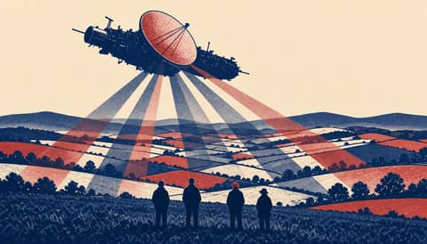
Italy to give Zelensky's troops access to its radar satellites in thirteenth aid package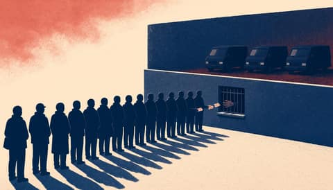
Hungarian media report Viktor Orbán's brother Áron detained in visa fraud raids- Republican Massie files eight impeachment articles against Defense Secretary Hegseth
- Europe set to be left out of the room as Russia and Ukraine meet in Abu Dhabi
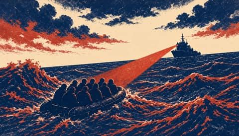
At least 20 dead in two boats off Crete, two still missing
The Harbour Ledger
News from the quay up.
 Hackers hit freezers at 700 French supermarkets, Paris blames Iran
Hackers hit freezers at 700 French supermarkets, Paris blames Iran Crowd attacked National Guard base near Kyiv after torture-chamber fakes
Crowd attacked National Guard base near Kyiv after torture-chamber fakes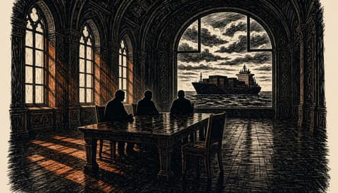
EU to take part in Abu Dhabi trilateral talks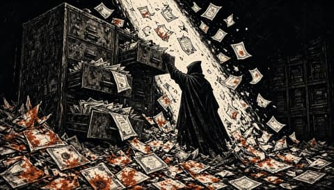
Hackers say stolen Rosstat data shows 450,100 Russian military deaths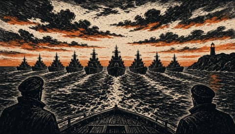
Ten northern European countries to run their navies as one force
Attacotti
Scotland's way home runs through Europe.


Europa Surgit
Europe is rising. Keep up.
- AfD split over ICE criticism as Chrupalla clashes with Weidel
- Europe has one seat at the table. It must speak with one voice.
- At least 20 dead in two migrant boats off Crete, two arrested
- Ten northern European nations sign pact to swap parts, ammunition and crews
- EU and Canada launch Alliance for the Future with defence deal
Nuntii Europae
News from a European perspective.
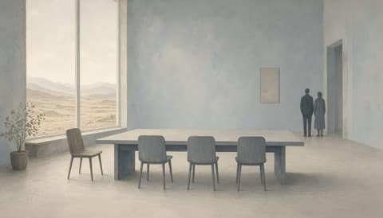
Russia says no agreement for Europe to join Abu Dhabi talks with Ukraine and US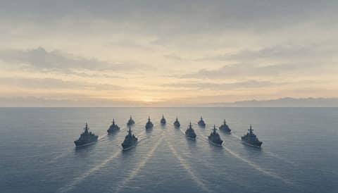
Ten northern European nations sign pact to pool their naval forces against Russia- Six reported dead and 16 wounded after man opens fire on Krakow's Main Market Square
- One Polish court now has two managements and neither has given way
- Nobody in Washington will pay for Europe's defence
Nuntii Batavi
The Netherlands, between The Hague and Brussels.


Leo Batavus
The Netherlands decides.
 French minister Barrot calls Mélenchon a spokesman for the Kremlin
French minister Barrot calls Mélenchon a spokesman for the Kremlin At least 20 dead in two boats off Crete, minister plans EU return hubs
At least 20 dead in two boats off Crete, minister plans EU return hubs Ten JEF countries to sign naval partnership pact on 10 November
Ten JEF countries to sign naval partnership pact on 10 November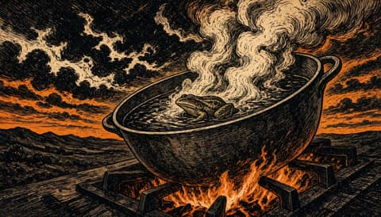
Hackers use AI in every attack phase, NCTV warns- Meta, Google and TikTok sue to block California ban on teen feeds
Europae Dexter
A sovereign Europe, argued plainly.
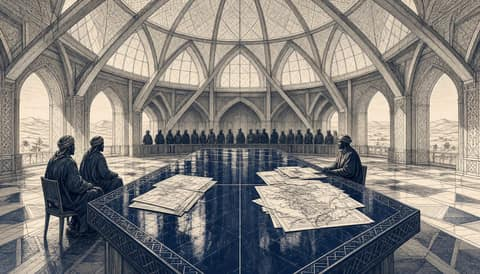
Moscow bars Europe from US-mediated Ukraine talks in Abu Dhabi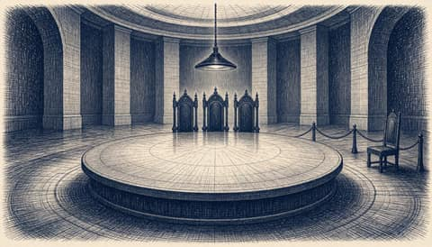
Russia denies Europe a seat at Abu Dhabi talks set by Washington without it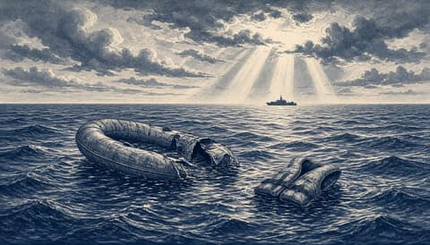
At least 20 dead off Crete as minister says Libya deal no longer holds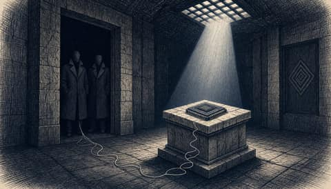
Nvidia board opens inquiry into whether Huang was targeted by foreign intelligence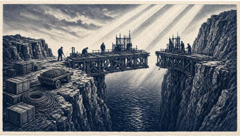
EU and Canada launch Alliance for the Future as Canada joins EU defence procurement scheme
Europa Patriarum
A Europe of nations.
 Karasin says no agreement exists for Europeans to join the Abu Dhabi talks
Karasin says no agreement exists for Europeans to join the Abu Dhabi talks At least 20 dead in two boats off Crete as minister plans EU return hub initiative
At least 20 dead in two boats off Crete as minister plans EU return hub initiative Ten northern countries sign naval partnership pact led from Britain's Northwood
Ten northern countries sign naval partnership pact led from Britain's Northwood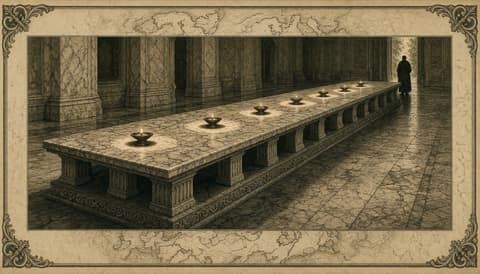
Seven parliaments legislating is not fragmentation. It is consent- American law binds no president. National law must bind Europe's defence.